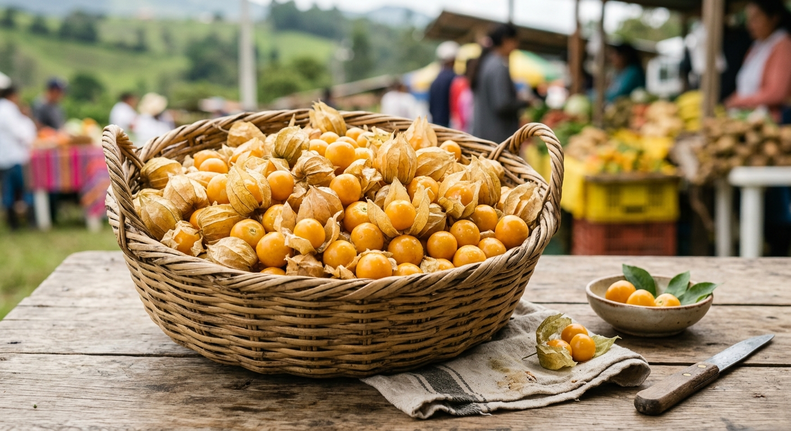
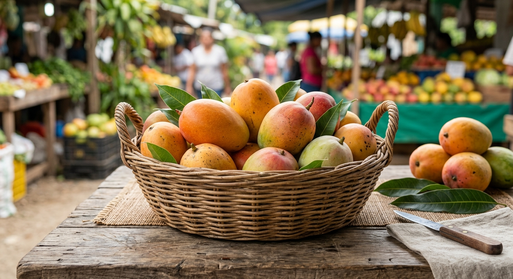

Frutas
Inicio
Nuestra cultura
Calendario de temporada
Frutas de temporada
Preguntas frecuentes
Contáctanos
Frutas de temporada

Uchuvas: parte de las frutas vendidas en Bogotá.

mangos: dan sabor a jugos.